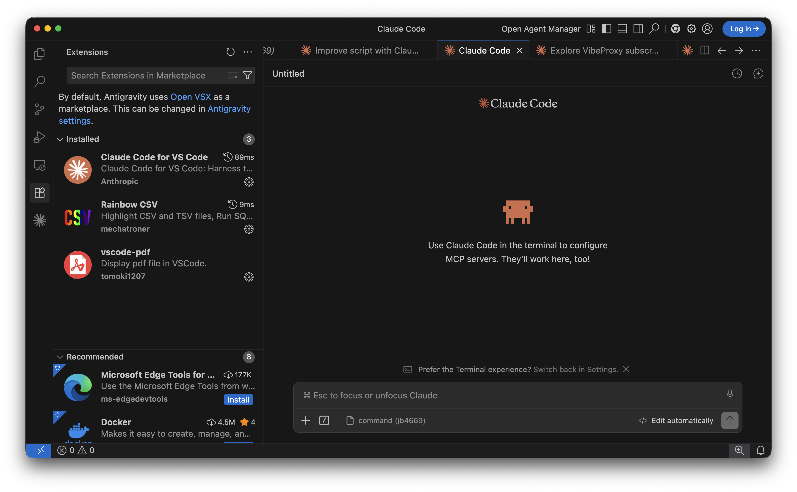

$ claude
✓ ready
P01 · CH02 · 바이브코딩 환경 세팅
바이브코딩
환경 세팅
Claude Code 설치 · Antigravity 에디터 연결
Claude Code 설치하기
2
이 강의의 접근법
터미널 말고
에디터 안에서
많은 분들이 Claude Code를 "터미널 도구"로 알고 계십니다. 맞습니다. 하지만 이 강의에서는 다르게 접근합니다.
이 강의에서 쓸 환경
Antigravity 에디터 + Claude Code
에디터 오른쪽 채팅 패널 → 자연어 지시
터미널은 꼭 필요할 때만
BEFORE vs AFTER
터미널만 쓸 때
화면 분할 필요
파일 편집기 따로
결과 확인 왔다갔다
명령어 직접 입력
Antigravity 안에서
한 화면에서 모두
diff 실시간 확인
채팅으로 즉시 지시
데이터 시각화 최적
Claude Code 설치하기
3
30초 정리
Claude Code
vs ChatGPT
단순히 질문에 답하는 게 아니라, 내 컴퓨터 파일을 직접 읽고, 코드를 실행하고, 결과물을 저장합니다.
$ claude
CSV 파일을 던져주면,
읽고 → 분석하고 → 차트 만들고
→ 저장까지 혼자 합니다.
CHATGPT (웹)
CLAUDE CODE
파일 처리
업로드한 파일만
폴더 전체 자동으로 읽음
코드 실행
직접 안 함
내 컴퓨터에서 직접 실행
결과 저장
복사-붙여넣기
파일로 자동 저장
기억
대화 끝나면 초기화
CLAUDE.md로 영구 기억
Claude Code 설치하기
4
설치 전 확인
준비물
두 가지
계정과 운영체제만 확인하면 설치 준비 완료입니다.
추천 플랜
Max $100/월
Pro $20는 하루 한도가 빠르게 찹니다.
본격적으로 쓸 거라면 Max 권장.
01 · CLAUDE.AI 계정
Pro
$20/월 — 하루 한도 있음
Max
$100/월 — 권장, 한도 넉넉
02 · 운영체제
macOS
13 (Ventura) 이상
Windows
10 (64비트) 이상
Linux
Ubuntu 20.04 이상
Claude Code 설치하기
5
설치
macOS
설치
터미널을 열고 명령어 하나를 붙여넣습니다. 설치 후 버전 확인까지 1분이면 끝납니다.
macOS 버전 확인:
🍎 → 이 Mac에 관하여
방법 1 — 공식 설치 스크립트
# 터미널에 붙여넣기
curl -fsSL https://claude.ai/install.sh | bash
방법 2 — Homebrew (설치되어 있을 때)
brew install --cask claude-code
설치 확인
claude --version
# 숫자가 나오면 설치 완료
Claude Code 설치하기
6
설치
Windows
설치
PowerShell을 관리자 권한으로 열고 아래 명령어를 실행합니다.
주의
npm으로 설치하는 방법은
공식적으로 deprecated입니다.
아래 방법을 사용하세요.
WSL 사용자
Windows Subsystem for Linux 환경에서는 curl 방식으로 설치할 수 있습니다. bash 스크립트 동작이 더 안정적입니다. Git for Windows가 있어야 합니다.
방법 1 — PowerShell (관리자 권한)
# PowerShell (관리자 권한으로 실행)
irm https://claude.ai/install.ps1 | iex
방법 2 — winget
winget install Anthropic.ClaudeCode
설치 확인
claude --version
Claude Code 설치하기
7
로그인
브라우저
로그인
설치 후 처음
claude
를 실행하면 브라우저가 자동으로 열립니다. claude.ai 계정으로 로그인하면 끝입니다.
첫 번째 명령
현재 폴더 경로를 알려줘.
→ 경로가 출력되면 정상 동작
$
터미널 실행
claude
브라우저 자동 오픈
claude.ai 인증 화면
로그인 완료
터미널로 돌아오면 프롬프트 활성화
Claude Code 설치하기
8
트러블슈팅
설치가
안 될 때
두 가지 경우만 알면 대부분 해결됩니다.
# 진단 명령어
claude doctor
보안 기초
API 키나 비밀번호를 채팅창에 직접 입력하지 마세요. Claude Code는 파일 시스템을 직접 읽을 수 있습니다.
케이스 01
"command not found" 오류
PATH 설정이 안 된 경우입니다. 터미널을 닫고 다시 열거나:
source ~/.zshrc
케이스 02
로그인이 안 되는 경우
네트워크 문제일 수 있습니다. 진단 명령으로 확인:
claude doctor
Claude Code 설치하기
9
CLIP 01 · 핵심 정리
Claude Code 설치 완료
01
명령어 하나로 설치
curl 또는 winget 한 줄로 설치.
브라우저 로그인으로 인증 완료.
02
구독 선택
Pro $20는 하루 한도가 빠릅니다.
본격 사용이라면 Max $100 권장.
03
다음: Antigravity 세팅
에디터 안에서 Claude Code를 쓰는
우리만의 작업 환경을 완성합니다.
CLIP 02 · Antigravity 에디터 환경 세팅
Antigravity
에디터 세팅
설치 · 익스텐션 연결 · 첫 번째 대화
Antigravity 에디터 환경 세팅
11
Antigravity란
AI 네이티브
코드 에디터
VS Code와 비슷하게 생겼지만, AI와의 협업을 기본으로 설계된 에디터입니다.
지원 환경
macOS: Apple Silicon (M1~M4), 12 이상
Windows: 10 64비트 이상
Intel Mac: 지원 안 함
01
에디터 안에서 Claude Code와 채팅
오른쪽 패널에서 자연어로 요청하면, Claude가 파일을 읽고 수정하고 실행합니다. 터미널을 별도로 열 필요 없습니다.
02
파일 변경을 실시간 diff로 확인
Claude가 파일을 수정하면 에디터에서 바로 보입니다. 수정 내용을 눈으로 확인하고 승인하거나 되돌릴 수 있습니다.
03
구독으로 API 추가 비용 없이
Claude Pro/Max 구독만 있으면 됩니다. 별도 API 키 없이 구독 내에서 사용.
Antigravity 에디터 환경 세팅
12
설치
Antigravity
다운로드
antigravity.google 에 접속해 macOS 또는 Windows 버전을 내려받습니다.
①
antigravity.google 접속
②
macOS .dmg 또는 Windows .exe 다운로드
③
macOS: Applications 폴더에 드래그
Windows: .exe 실행
Antigravity 에디터 환경 세팅
13
익스텐션 연결
Claude Code
익스텐션
에디터 안에 Claude Code 익스텐션을 설치하고 계정과 연결합니다.
STEP 1
퍼즐 아이콘 → "Claude Code" 검색 → Install
STEP 2
주황색 꽃 아이콘 → Connect Account
STEP 3
브라우저 인증 → 코드 복사 → 에디터 붙여넣기

Antigravity 에디터 환경 세팅
14
레이아웃
작업 환경
구성
이제 실제로 쓸 레이아웃을 잡습니다. 세 가지 영역을 이렇게 배치합니다.
Claude Code 채팅 패널
자연어로 작업 지시 → 주 작업 공간
에디터
파일 내용 확인 및 검토
터미널 (Ctrl + `)
꼭 필요할 때만 사용
EXPLORER + EDITOR
CLAUDE CODE PANEL
CSV 파일 분석해줘
파일을 읽겠습니다...
TERMINAL (필요 시)
$ _
Antigravity 에디터 환경 세팅
15
Antigravity 에디터 환경 세팅
16
테스트
첫 번째
대화
오른쪽 Claude Code 패널에서 아래 두 가지를 입력해 정상 동작을 확인합니다.
파일이 생성되면
환경 세팅 완료입니다.
테스트 1 — 폴더 인식 확인
data 폴더 안에 sample.csv 파일을 만들어줘.
컬럼은 날짜, 채널, 매출 세 가지로 해줘.
# 파일 탐색기에 data/sample.csv 생기면 정상
테스트 2 — 데이터 읽기 확인
방금 만든 sample.csv 읽고 채널별 매출 합계 보여줘.
# 숫자가 나오면 환경 세팅 완료
성공 기준
왼쪽 파일 탐색기에 hello.txt가 생성되면
환경 세팅이 완료된 것입니다.
Antigravity 에디터 환경 세팅
17
핵심 원칙
터미널
명령어
안 외워도 됨
채팅 패널에서 말하면, Claude가 알아서 실행합니다.
이 강의에서 우리가 주로 쓸 것
💬 Claude Code 채팅 패널
📁 에디터 (파일 확인)
⌨️ 터미널 (가끔)
채팅 패널에서 이렇게 말하면
말로
data.csv 파일 읽고
채널별 합계 만들어줘
Claude가 실행
import pandas as pd
df = pd.read_csv('data.csv')
result = df.groupby(...)...
파이썬을 몰라도 됩니다.
원하는 것을 말하면, Claude가 코드를 작성하고 실행합니다.
Antigravity 에디터 환경 세팅
18
P01-CH02 · 완료
환경 세팅 완료
01
Claude Code 설치
명령어 하나, 브라우저 로그인으로 완료.
02
Antigravity 연결
에디터 안에서 채팅으로 작업 지시.
diff로 변경 내용 실시간 확인.
03
다음: CLAUDE.md
Claude가 매번 같은 맥락을 기억하게 만드는 방법을 배웁니다. P02에서 CLAUDE.md 설계부터 시작합니다.
1 / 18
←
→